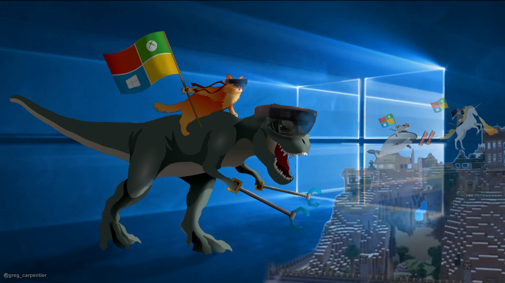

Blog Tech
Bem-vindo ao Windows blog
sua fonte de notícias, tutoriais e dicas para o mundo Windows
seja vc o usuário experiente ou iniciante, o Windows Blog é o lugar perfeito para se
manter atualizado sobre o sistema operacional mais popular do mundo!
